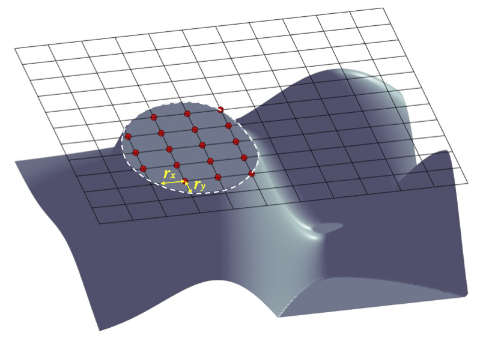

Representation of 3D geometry of obstacles¶

Configuration of 3D object surface. Red points represent solid object masks at a vertical level s. The masks at the surface boundary have two parameters (\(r_x, r_y\)), representing distances to the boundary (white line) in \(x\) and \(y\), respectively. Model input is through the so-called obstacle files, including masks, \(r_x\) and \(r_y\). Values of (\(r_x, r_y\)) are optional. If users do not provide (\(r_x, r_y\)) the default (\(r_x, r_y\)) = \(0\).